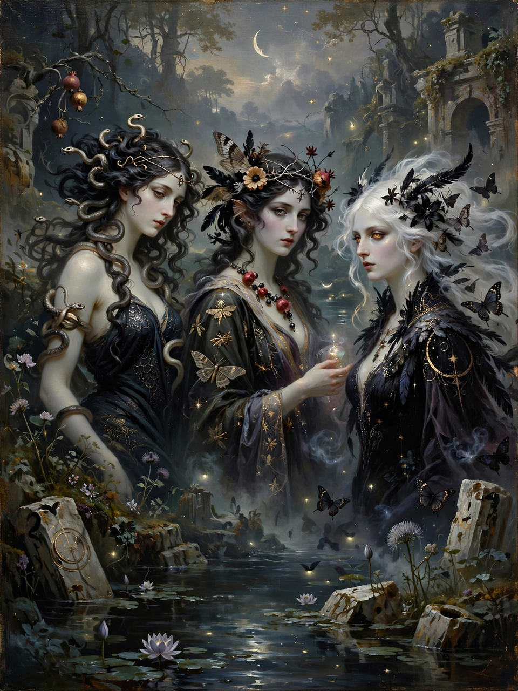

Symbolism (arts)

Symbolism was a late 19th-century art movement of French and Belgian origin in poetry and the visual arts. Reacting against naturalism and realism, Symbolist artists and writers sought to express ideas and emotions through symbols, suggestion and dreamlike imagery rather than direct description — to represent absolute truths symbolically through language and metaphorical images.
Origins and literature
The movement was named by critic Jean Moréas's "Symbolist Manifesto" (1886). Baudelaire's poetry, especially Les Fleurs du mal (1857), was its great precursor; its master poets were Stéphane Mallarmé, Paul Verlaine and Arthur Rimbaud, and it drew inspiration from the aesthetics of Théophile Gautier and Edgar Allan Poe. Joris-Karl Huysmans's novel À rebours (1884) became the bible of the Decadent wing of the movement.
Visual arts
Symbolist painters — Gustave Moreau, Odilon Redon and Pierre Puvis de Chavannes in France; Fernand Khnopff in Belgium; Edvard Munch in Norway; Gustav Klimt in Austria — filled their canvases with mythological, religious and erotic subjects, femmes fatales, dreams and death, rejecting the everyday world of the Impressionists. The movement influenced Art Nouveau, the Nabis, and through writers such as W. B. Yeats and T. S. Eliot, modernist literature generally.
Theatre and music
Symbolist theatre (Maurice Maeterlinck's Pelléas et Mélisande) and music (Debussy's opera on the same subject; Scriabin's mystical compositions) extended the movement's reach across Europe, where it fed into Expressionism and Surrealism.